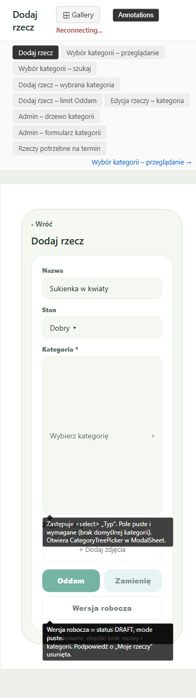
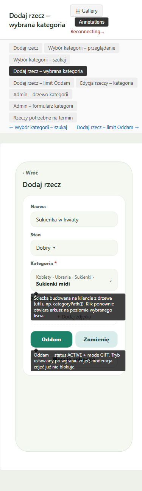
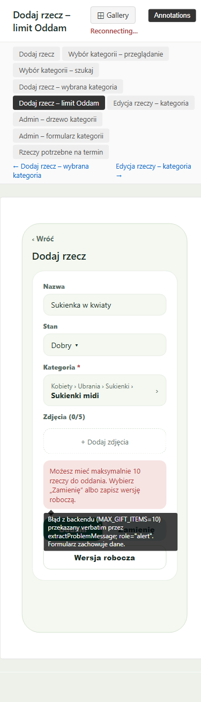
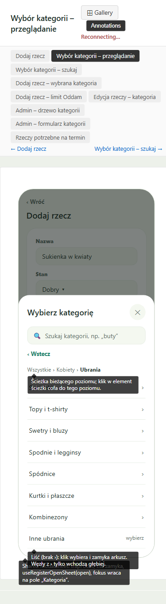
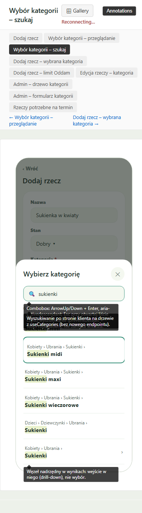
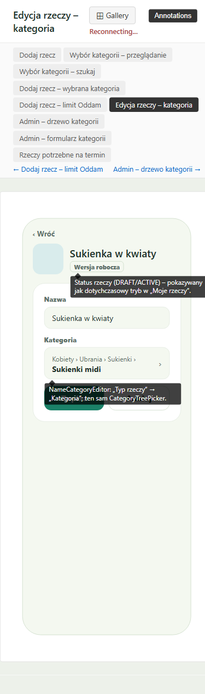
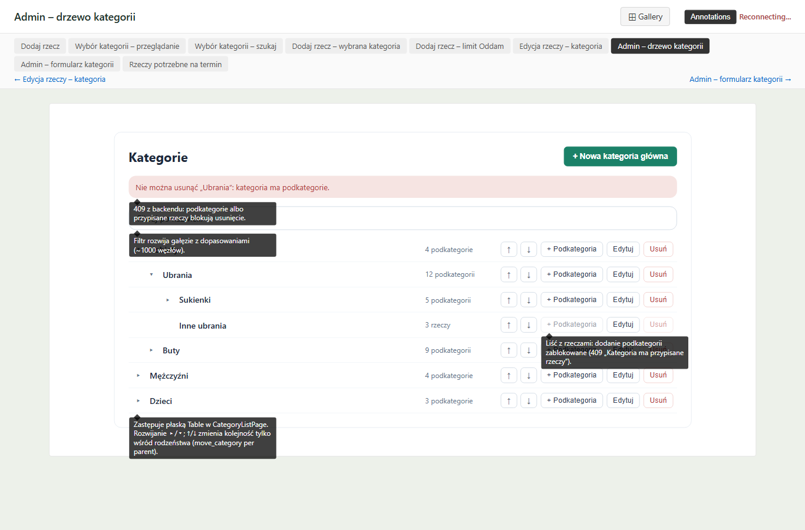
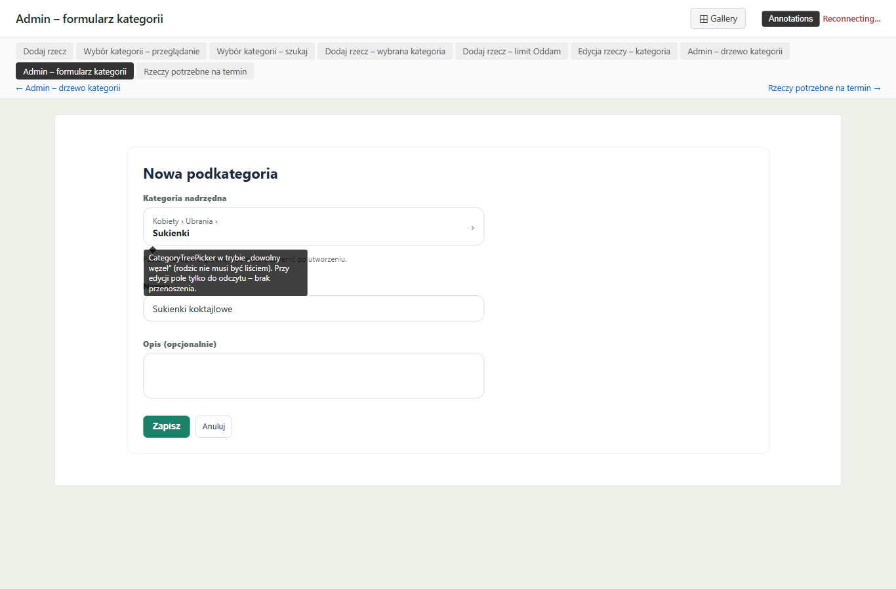
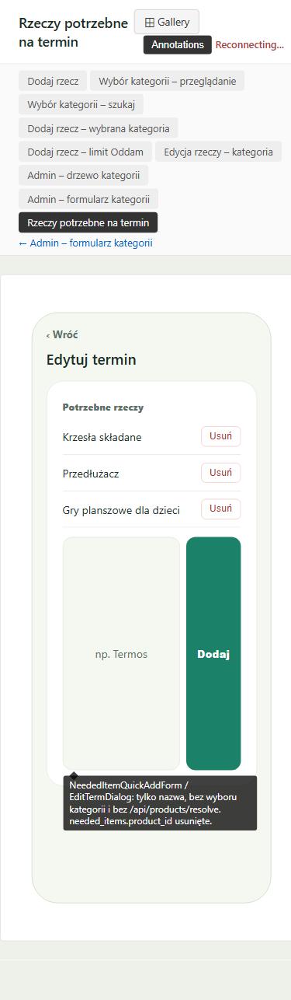

Per-screen comparison
screen:dodaj-rzecz ✓ Match
Field order Nazwa → Stan → Kategoria * → Zdjęcia → buttons; Oddam/Zamienię grid + full-width Wersja robocza, disabled while invalid. Adds the FR-21 hint text.


screen:dodaj-rzecz-wybrana-kategoria ✓ Match
Trigger shows the small ancestor path + bold leaf; buttons enabled.


screen:dodaj-rzecz-limit-oddam ✓ Match
Danger-soft role=alert with the verbatim backend text above the buttons; data kept.


screen:wybor-kategorii-przegladanie ✓ Match
Sheet title + ✕, search, ‹ Wstecz, breadcrumb with the bold current level, › on non-leaves, 'wybierz' on leaves.


screen:wybor-kategorii-szukaj ✓ Match
Path line over a highlighted name, live count, › on non-leaf results. The 50-cap hint (FR-20) appears in 06.


screen:edycja-rzeczy-kategoria ⚠ Minor deviation
Chip, Kategoria picker and Zapisz/Anuluj match. Deviation: no visible 'Nazwa' label (sits under the 'NAZWA I KATEGORIA' heading); embedded in the full edit page.


screen:admin-drzewo-kategorii ⚠ Minor deviation
Structure, order, meta, alert, filter and disabled states match. Deviation: borderless text actions; Chakra-blue primary instead of green; extra subtitle.


screen:admin-formularz-kategorii ⚠ Minor deviation
Fields and hint match. Deviation: extra breadcrumb; blue Zapisz.


screen:rzeczy-potrzebne-na-termin ⚠ Minor deviation
Plain names with Usuń, no category. Deviation: extra Edytuj per row; add row collapsed behind '+ Dodaj potrzebną rzecz' with an optional Doprecyzowanie field.


component:category-tree-picker ✓ Match
Same sheet in the add, edit, admin product and admin parent pickers; any-node mode adds 'Kategoria główna (brak)'.

component:item-submit-actions ✓ Match
Oddam primary (mint), Zamienię secondary (teal-soft), Wersja robocza outline full width.